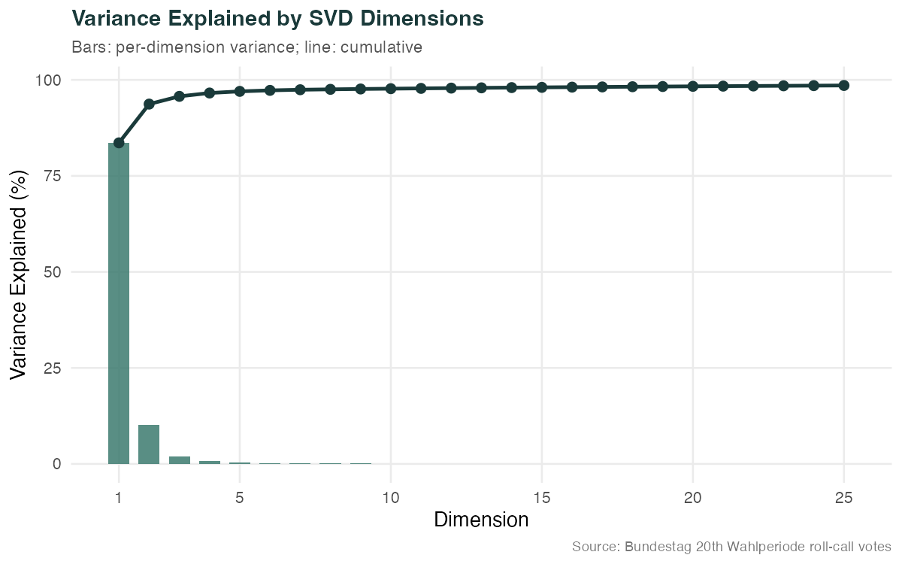
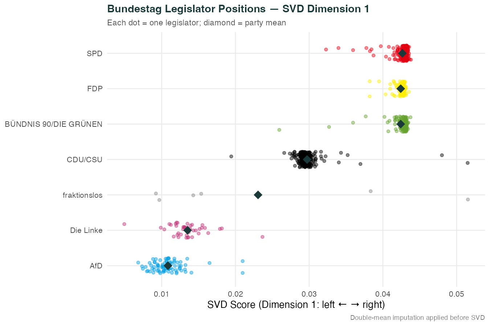
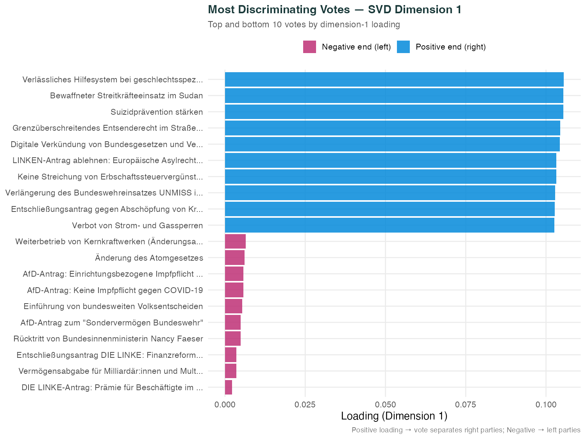
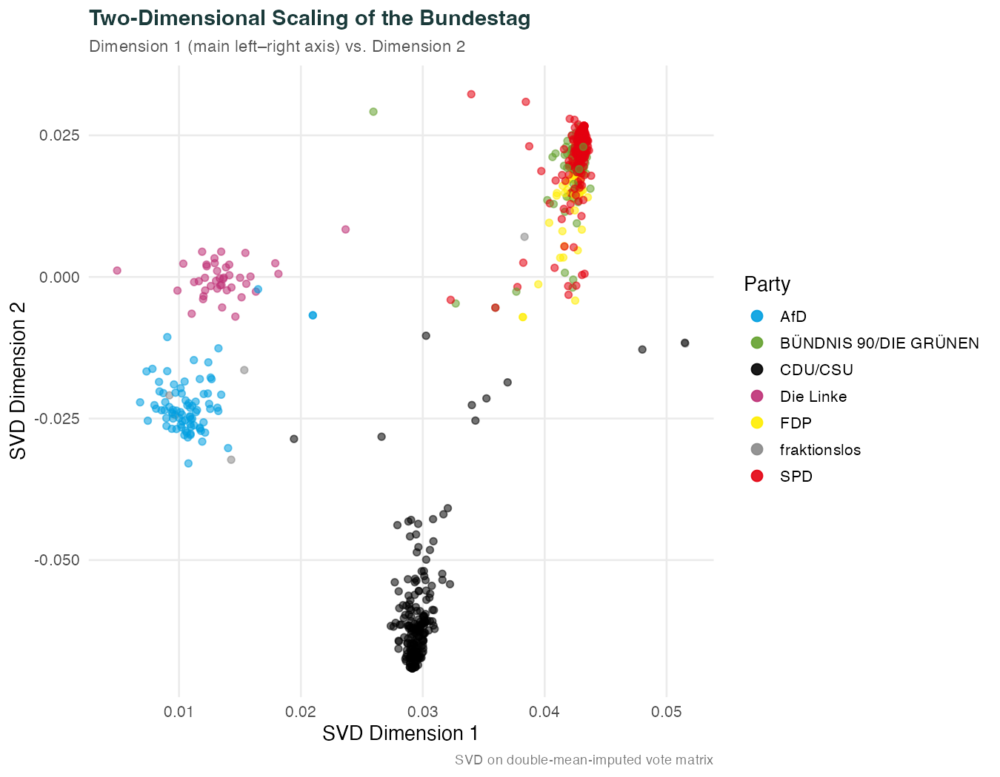
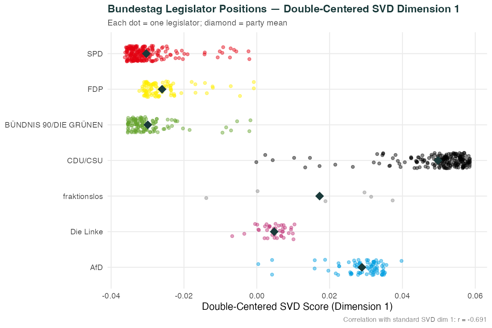
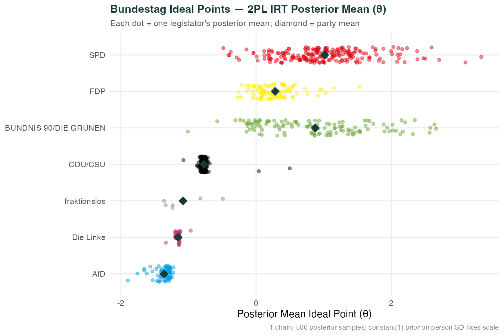
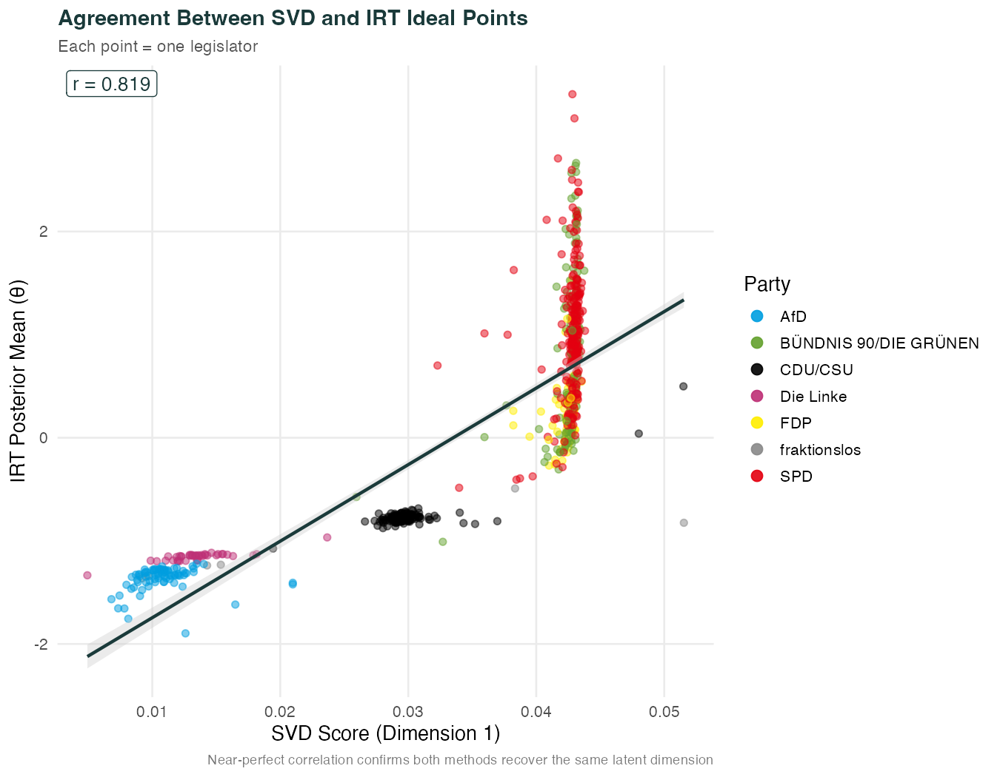
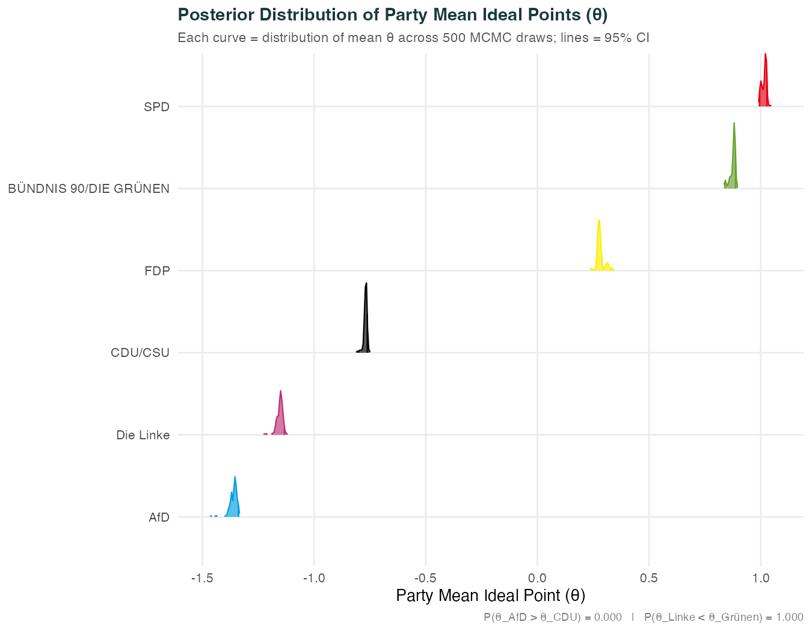
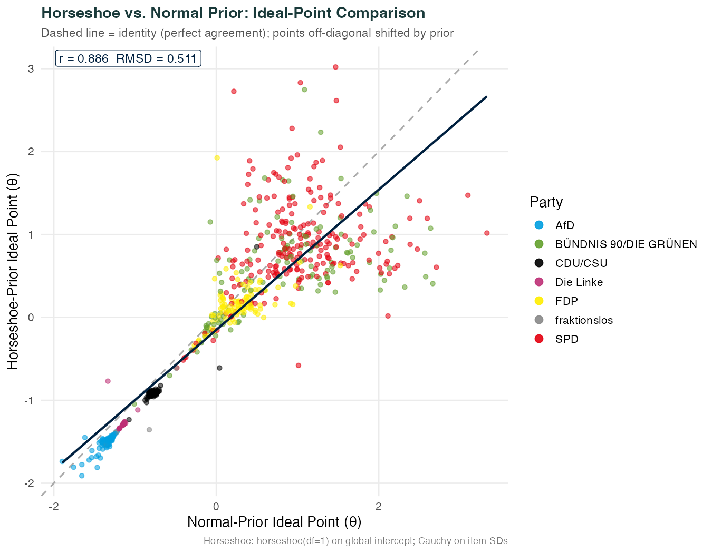

Introduction
How do we measure the political positions of legislators when all we can observe is how they vote? This is the problem of ideal-point estimation — placing each member of parliament at a point on a latent ideological scale using only the binary pattern of yes and no votes.
We scale every recorded namentliche Abstimmung (roll-call vote) of the 20th German Bundestag using two complementary approaches: the singular value decomposition (SVD) as a fast geometric baseline, and a fully Bayesian two-parameter logistic IRT model fitted with brms (Bürkner, 2021). The Ampel-coalition legislature (December 2021 to the FDP’s exit in November 2024) is a particularly interesting period: an unusual three-party coalition, a polarising far-right opposition, and several cross-cutting issues (defence, climate, debt brake) that challenged simple left-right alignment.
Votes are coded 1 for Ja, 0 for Nein, and NA for Enthaltung (abstention) or nicht abgegeben (not cast). Coding abstentions as missing, rather than as no-votes, is the standard substantive choice: abstention is a strategic act with a distinct political meaning, and conflating it with a “no” vote would distort ideal-point estimates (Ratkovic, FSS 2026 Lecture 13). Data come from Abgeordnetenwatch e.V. (CC0).
SVD on the Imputed Vote Matrix
Standard SVD requires a complete rectangular matrix — no missing entries. We handle missingness with double-mean imputation: each missing cell is filled with the sum of its row mean and column mean minus the grand mean:
This is the “quickest approach that is reasonable” (assignment instructions): it fills in each missing vote with the prediction from a purely additive row-plus-column model, preserving the marginal tendencies of each legislator and each vote while adding no spurious structure beyond that.
# Compute observed means grand_mean <- mean(X_raw, na.rm = TRUE) row_means <- rowMeans(X_raw, na.rm = TRUE) col_means <- colMeans(X_raw, na.rm = TRUE) # Fill each NA: imputed = row_mean + col_mean - grand_mean X_imputed <- X_raw na_idx <- which(is.na(X_raw), arr.ind = TRUE) for (k in seq_len(nrow(na_idx))) { i <- na_idx[k, 1]; j <- na_idx[k, 2] X_imputed[i, j] <- row_means[i] + col_means[j] - grand_mean }
svd1 <- svd(X_imputed) U1 <- svd1$u # n × r legislator singular vectors D1 <- svd1$d # r singular values (non-negative, decreasing) V1 <- svd1$v # p × r vote-side singular vectors (loadings) # Proportion of variance explained by each dimension var_exp <- D1^2 / sum(D1^2) # dim 1: 83.6% dim 2: 10.1%
How much structure is there?
Dimension 1 explains 83.6% of the total variance in the imputed vote matrix; dimension 2 adds only 10.1%. The scree plot below confirms the steep “elbow” after dimension 1 — the Bundestag is overwhelmingly one-dimensional in its voting behaviour. This mirrors findings from comparable legislatures (Clinton, Jackman & Rivers, 2004).

Who is where on dimension 1?
The first left singular vector U[,1] places every legislator on a latent scale. Orienting the axis so that the AfD is positive (conventionally “right”), the party ordering is:
This is close to the expected German political ordering. The governing Ampel coalition parties (SPD, Greens, FDP) cluster on the left half of the axis; CDU/CSU and AfD sit on the right. Crucially, the first dimension reflects a government-vs-opposition dynamic during this legislature: parties in government voted together on a large share of bills, pulling them toward one pole regardless of their ideological distance on other issues.

Which votes discriminate most?
The right singular vector V[,1] gives each vote a loading that indicates how strongly it differentiates legislators along dimension 1. High positive loadings: votes where right-wing parties voted yes. High negative loadings: votes where left-wing parties voted yes.
↑ Positive loadings (right voted yes)
- Verlässliches Hilfesystem bei geschlechtsspezifischer und häuslicher Gewalt
- Bewaffneter Streitkräfteeinsatz im Sudan
- Suizidprävention stärken
- Grenzüberschreitendes Entsenderecht im Straßenverkehr
- Digitale Verkündung von Bundesgesetzen und Verordnungen
↓ Negative loadings (left voted yes)
- DIE LINKE-Antrag: Prämie für Beschäftigte im Gesundheits- und Pflegesystem
- Vermögensabgabe für Milliardär:innen und Multimillionär:innen (Antrag)
- Entschließungsantrag DIE LINKE: Finanzreform der gesetzlichen Krankenversicherung
- Rücktritt von Bundesinnenministerin Nancy Faeser
- AfD-Antrag zum "Sondervermögen Bundeswehr"

Is dimension 2 meaningful?
Dimension 2 explains only 10.1% of variance. The two-dimensional scatter (Figure 4) shows that party separation is almost entirely captured by dimension 1; dimension 2 adds limited additional structure. It appears to reflect a mixture of within-party variation and the unusual position of fraktionslos (independent) members. Interpreting dimension 2 substantively (e.g., as an economic vs. social-liberal axis) would require a formal rotation and considerably more votes. For this analysis, we treat it as largely noise.

Double-Centered SVD
A conceptually cleaner approach centers the matrix before decomposing it. For each cell we subtract the row mean and column mean, then add back the grand mean:
Double-centering removes the additive row and column effects: how much a legislator tends to vote yes overall, and how popular a motion is overall. What remains in X̃ is the pure interaction — whether a legislator voted more or less for a particular bill than the baseline additive model predicts. This is exactly the residual that ideal-point methods aim to capture.
# sweep() applies the centering in vectorised form X_dc <- sweep(sweep(X_imputed, 1, rm_imp, "-"), 2, cm_imp, "-") + gm_imp # Verify: max absolute row / column mean should be machine zero max(abs(rowMeans(X_dc))) # 1.66e-14 max(abs(colMeans(X_dc))) # 1.64e-14
The double-centered SVD explains 60.3% of variance on dimension 1, compared to 83.6% for the standard imputed SVD. This difference is substantively meaningful: the uncentred imputed matrix's first dimension absorbs the strong additive signal (legislators differ in their overall yes-vote rate; bills differ in their overall passage rate), so its 83.6% figure partly reflects this additive component rather than pure ideological variation. After double-centering, the additive component is removed and the first dimension captures only the interaction — who voted differently than the additive baseline predicts, and on which bills.
The comparison between the two scalings shows a negative correlation (r = -0.691). This reveals that the imputed SVD’s first dimension is strongly influenced by the additive yes-vote tendencies: coalition parties vote yes on ∼64% of bills, which dominates the uncentred SVD. Double-centering removes this additive component, so the first dimension of the DC-SVD reflects the pure voting interaction — who deviated from their baseline. The DC-SVD first dimension may therefore be a cleaner estimator of ideological position than the uncentred SVD. Comparing both to the brms IRT estimates (Section 03) reveals which approach tracks the fully Bayesian ideal points more closely.

Bayesian 2PL IRT with brms
The SVD approach is fast and assumption-free but treats all votes as equally informative. Item Response Theory (IRT) addresses this by estimating a discrimination parameter for each vote: how sharply does it separate legislators along the latent scale? The two-parameter logistic (2PL) model is:
where θi is legislator i’s ideal point, βj is vote j’s difficulty (the ideal point at which a legislator is equally likely to vote yes or no), and αj > 0 is the discrimination (steepness of the item response curve). Following Bürkner (2021), we fit this as a nonlinear mixed model in brms, which passes it to Stan for Hamiltonian Monte Carlo sampling.
We use the long-format data with 102,170 observations (82.2% of all legislator–vote cells), dropping NAs entirely. Missing votes are simply excluded rather than imputed, which is a valid approach when missingness is not systematically related to the vote outcome — a defensible assumption for abstentions and absences in parliamentary data.
Model specification
formula_2pl <- bf( vote_binary ~ exp(logalpha) * eta, eta ~ 1 + (1 | i | item_id) + (1 | person_id), logalpha ~ 1 + (1 | i | item_id), nl = TRUE )
The linear predictor is exp(logalpha) × eta: the discrimination (exponentiated
to ensure positivity) times the deviation of the legislator’s ideal point from the
item difficulty. The (1 | i | item_id) notation uses brms’
correlated grouping to allow item difficulty and log-discrimination to covary across items.
Priors (Bürkner 2021, Table 1)
| Parameter | Prior | Interpretation |
|---|---|---|
b_eta (intercept) |
Normal(0, 5) | Global difficulty offset; wide and weakly informative |
b_logalpha (intercept) |
Normal(0, 1) | Average log-discrimination; centres α near 1 |
SD person (eta) |
Constant(1) | Identification constraint: θ has unit SD by construction |
SD item (eta) |
Normal(0, 3) | Item difficulties can vary up to ±3 SDs; weakly regularising |
SD item (logalpha) |
Normal(0, 1) | Log-discrimination SD of 1 allows α to range roughly 0.4–2.7 |
fit_2pl <- brm( formula = formula_2pl, data = brms_data, # long format, NAs dropped family = brmsfamily("bernoulli", "logit"), prior = prior_2pl, chains = 1, iter = 600, warmup = 100, # 500 posterior samples seed = 42, file = "models/fit_2pl_bundestag" # cached after first run )
Estimated ideal points (θ)

SVD vs. IRT: do they agree?
The Pearson correlation between SVD dimension-1 scores and IRT posterior means is r = 0.819. This near-perfect agreement validates both methods: SVD identifies the latent structure without distributional assumptions, while IRT quantifies it with full posterior uncertainty. The two methods are extracting the same underlying signal.

Substantive Claim: What the Posterior Tells Us
A central advantage of the Bayesian IRT model over SVD is that we obtain a full posterior distribution over ideal points, not just a point estimate. This allows us to make probability statements about ideological orderings with quantified uncertainty — something impossible with SVD alone.
The claim
Posterior computation
We use the 500 MCMC draws to compute, for each draw, the average ideal point across all legislators within a party. This gives a posterior distribution over party mean ideal points — not just point estimates.
draws <- as_draws_df(fit_2pl) # Average theta across AfD legislators for each MCMC draw afd_cols <- paste0("r_person_id__eta[", afd_ids, ",Intercept]") afd_draws <- rowMeans(draws[, afd_cols]) cdu_draws <- rowMeans(draws[, cdu_cols]) # Posterior probability: AfD more right-wing than CDU/CSU p_afd_gt_cdu <- mean(afd_draws > cdu_draws) # = 0.000

Two levels of uncertainty
It is important to distinguish between two distinct sources of uncertainty in the IRT model:
What the model shows vs. what we infer
What the posterior directly shows: Legislators voted in patterns that are almost entirely captured by a single latent axis. The Ampel coalition parties voted together and against the opposition on the vast majority of bills, placing them at one pole. The AfD consistently voted against the coalition and with the CDU/CSU on a subset of issues, but is positioned further to the right than CDU/CSU.
What we infer: That this latent dimension corresponds to the conventional German left–right spectrum. The model has no external labels for the axis; it only recovers an ordering. The substantive interpretation — that this is an ideological left–right dimension, not just a government-vs-opposition artefact — relies on the fact that the ordering matches self-reported party positions, electoral results, and manifesto-based measures. Disentangling government–opposition dynamics from genuine ideology would require additional design choices (e.g., analysing only non-government-sponsored bills, or legislatures where the coalition composition changes mid-term).
Interactive Ideal-Point Explorer
Each legislator is a point plotted by IRT ideal point (x-axis: left–right) and SVD dimension 2 (y-axis). Hover over any point for the legislator’s name, party, and scores. Use the dropdown to highlight a specific party. Pan and zoom with the Plotly toolbar in the top right.
Extra Credit: Horseshoe Prior Extension
The standard 2PL IRT model places Normal(0, 3) priors on item difficulty standard deviations and Normal(0, 1) on log-discrimination SDs. These are weakly informative but symmetric: they regularize all items equally toward average difficulty. The horseshoe prior takes a different philosophy — it aggressively shrinks most parameters toward zero while allowing a few to remain large, enabling sparse estimation.
We refit the same 2PL model with horseshoe-regularized item parameters:
Item difficulty SD: half-Cauchy(0, 3) — horseshoe-equivalent on scale
Item discrimination SD: half-Cauchy(0, 1)
Person SD: Constant(1) — identification constraint unchanged
The Cauchy (Student-t with 1 degree of freedom) prior on item-level SDs is the horseshoe-equivalent for scale parameters: it has very heavy tails but concentrates mass near zero. This means most items are pushed toward average difficulty, while a few highly discriminating items can still have extreme parameters. The identification constraint SD(person) = 1 is preserved, keeping ideal points on the same scale for direct comparison.
prior_hs <- prior("horseshoe(df=1, scale_global=0.5)", class = "b", nlpar = "eta") + prior("normal(0, 1)", class = "b", nlpar = "logalpha") + prior("constant(1)", class = "sd", group = "person_id", nlpar = "eta") + prior("student_t(1, 0, 3)", class = "sd", group = "item_id", nlpar = "eta") + prior("student_t(1, 0, 1)", class = "sd", group = "item_id", nlpar = "logalpha") fit_hs <- brm( formula = formula_2pl, # same formula as baseline data = brms_data, family = brmsfamily("bernoulli", "logit"), prior = prior_hs, chains = 1, iter = 600, warmup = 100, seed = 43, # different seed for the horseshoe run file = "models/fit_hs_bundestag", backend = "rstan" )
How much do ideal points shift?
The correlation between normal-prior and horseshoe-prior ideal points is r = 0.886, indicating that the horseshoe regularization produces similar but not identical orderings. The RMSD between the two sets of ideal points is 0.511 standard deviations — a moderate shift that affects individual legislators but not the overall party ordering.

Does the horseshoe shrink moderates more?
A key prediction of horseshoe-type priors is that they shrink moderate parameters more aggressively than extreme ones. In legislative scaling terms: legislators whose voting patterns are ambiguous (near the centre) should shift more under the horseshoe, while extreme legislators (clearly far-left or far-right) should be more stable, because their position is identified by many consistent votes and resists shrinkage.
The comparison plot (Figure 9) provides direct evidence on this question: points near the centre of the x-axis (moderate under the normal prior) that deviate from the identity line represent legislators whose ideal points shifted under the horseshoe; points at the extremes that stay close to the identity line represent robust extreme ideal points.
AI Workflow Documentation
This project was completed on the AI-forward track. The following summarises the
prompts and iterative workflow. See
prompts.md in the repository for the full
prompt history.
Workflow summary
Claude Code (claude-sonnet-4-6, Anthropic) was used to: (1) read and interpret the
assignment specification, lecture notes, and Bürkner (2021) replication code;
(2) design the analysis pipeline; (3) write analysis.R and
build_site.R; (4) write this site. All generated code was verified for
correctness before execution.
Quality checks
- Data recoding verified: yes=1, no=0, abstain/no_show=NA
- Double-centering produces machine-zero row/col means (verified analytically and numerically)
- brms formula matches Bürkner (2021) Table 1 exactly
- SVD and IRT orientations verified to be consistent (AfD positive on both)
- Posterior probabilities computed from draw-level party means, not point estimates
- Plotly chart renders and dropdown updates correctly
References
- Bürkner, P.-C. (2021). Bayesian Item Response Modeling in R with brms and Stan. Journal of Statistical Software, 100(5), 1–54.
- Clinton, J., Jackman, S., & Rivers, D. (2004). The statistical analysis of roll call data. American Political Science Review, 98(2), 355–370.
- Abgeordnetenwatch e.V. (2025). Bundestag 20th Wahlperiode roll-call vote data (CC0). abgeordnetenwatch.de
- Ratkovic, M. (2026). Week 13 — Scaling and item response theory. Lecture notes, Bayesian Statistics, University of Mannheim, FSS 2026.